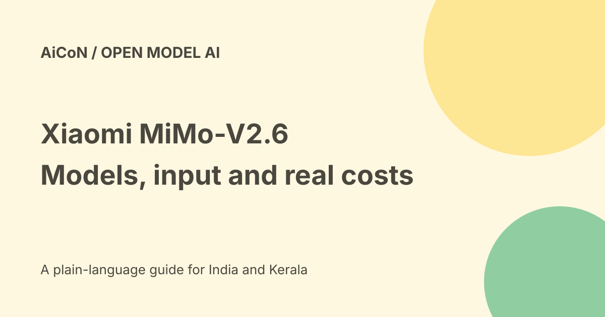

Xiaomi MiMo-V2.6: model variants, API costs and output limits
Xiaomi's current MiMo-V2.6 pages list Pro and Flash with text, image, video and audio input, but text output. "Fully multimodal" should not be read as generating every media type. Open checkpoints, paid APIs and smaller distilled models are separate routes.

Pro, Flash and distilled variants
The current product pages describe a three-model series. The official Hugging Face account lists Pro-RL, Flash-RL and Distill-Qwen-9B, alongside MOPD variants. Choose the exact checkpoint, not merely the family name.
The 9B model card says it is based on Qwen3.5-9B, fine-tuned using MiMo-generated data, and released as a starting point for open research in agentic reinforcement learning. It is not the same model or full-size capacity as Pro.
Input is not output
The hosted Pro and Flash specifications list text, image, video and audio input. Both list text output, a 1M-token context window and 128K maximum output.
These are advertised service limits, not proof that every local deployment supports the same length or resources. A model understanding a video is different from generating a new video or speaking audio.
What reinforcement learning means here
The Pro-RL card describes mixed training across coding, agents, visual and cybersecurity tasks, with verifier checks and distillation stages. Reinforcement learning uses feedback to improve model behaviour.
Those are developer training descriptions. They do not prove that every generated command is safe, every task completes or every reward measures the right real-world result.
Benchmarks stay attributed
The model card publishes comparisons across coding, agent and visual tasks. Rankings depend on the checkpoint, test, tools and evaluation setup.
We did not independently reproduce Xiaomi's strongest-model or overseas-price comparisons. Avoid treating a changing benchmark leaderboard as a guarantee for a Malayalam question, a private repository or your laptop.
Current hosted Pro prices
The official Pro page lists per-million-token USD rates of US$0.0036 for cache-hit input, US$0.435 for cache-miss input and US$0.87 for output.
At the checked approximate Rs 96.47 per dollar reference, those are roughly Rs 0.35, Rs 41.96 and Rs 83.93 per million respective tokens. Cache-hit pricing applies only when the service treats input as a hit; it is not the normal price for every prompt.
Current hosted Flash prices
The Flash page lists US$0.0028 cache-hit input, US$0.14 cache-miss input and US$0.28 output per million tokens, approximately Rs 0.27, Rs 13.51 and Rs 27.01 at the same reference rate.
These are page observations and currency estimates, not an Indian checkout quote. Tax, account eligibility, regional payment methods, plans and additional services need actual account terms.
Open weights and licence scope
The Pro-RL README declares MIT in its licence metadata. We retrieved that exact model card rather than assuming every family variant has identical terms.
A separate LICENSE file fetch did not resolve, and we did not establish the full current licence of every distilled or MOPD variant. Before redistributing or shipping a derivative, read the exact checkpoint's complete terms and any base-model obligations.
Self-hosting is not costless
Open download access does not pay for memory, GPUs, storage or electricity. The Pro model card provides multi-device serving examples, so do not infer that a full Pro checkpoint runs on an ordinary student laptop.
A smaller model may be more practical, but its hardware needs, modality support, licence and output quality still need a separate check. Do not substitute Pro benchmark claims for the distilled version.
A careful developer trial
- Choose the exact hosted model or checkpoint.
- Read its card, licence and serving requirements.
- Use a harmless public test input.
- Check output type and context limits.
- For API use, set a small budget and inspect token usage.
- For local use, isolate test files and untrusted code.
- Review generated commands before running them.
- Measure quality against answers you can verify.
- Keep secrets and privileged credentials out of the test.
India and safety limits
No Indian API account was activated, model downloaded or GPU workload run here. Malayalam quality, data residency, payment acceptance and local speed remain untested.
High-stakes or cybersecurity wording in a product page is not professional assurance. Medical, legal, financial and security decisions need the right expert review.
What changed since the original post?
We update the two-model shorthand to current variants, distinguish multimodal input from text output, add exact hosted rates and qualify checkpoint licence and benchmark scope.
Frequently asked questions
Does it generate audio and video?
The current Pro and Flash pages list text output.
Does an open download make the API free?
No. Hosted usage has separate published prices.
Does Pro performance apply to 9B?
No. Treat each checkpoint separately.
Sources: Official Pro specifications and pricing · Official Flash specifications and pricing · Exact Pro-RL model card · Pro-RL README licence metadata · Distilled 9B model card · Approximate exchange-rate reference. Checked 7 October 2026.